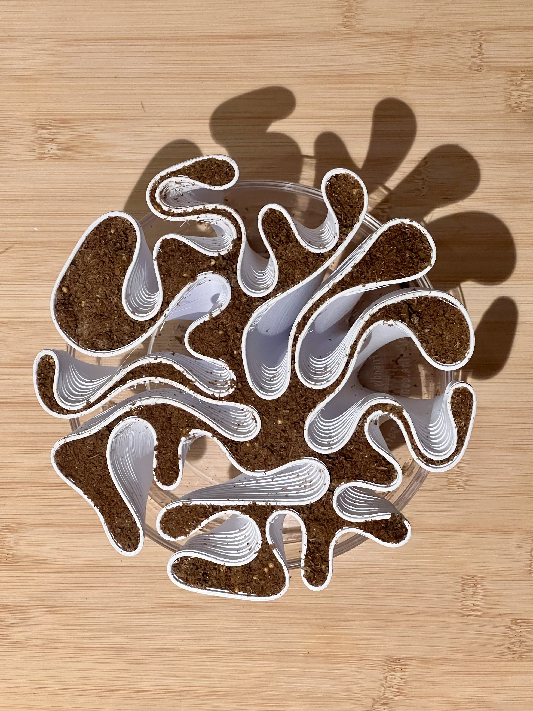

Toxic
by Design

Blue oyster mushrooms are saprophytic decomposers — organisms that have evolved to extract nutrition from dead and decaying matter through enzymatic breakdown. This experiment repositions that biological capacity as an architectural intelligence: a living system that reads chemical contamination as resource, metabolizes toxicity as sustenance, and in doing so, transforms the substrate it inhabits. The mushroom is remediating pollution, but when absorbing toxins, the mushrooms themselves become toxic.
Biological + Architectural Logic
Toxicity is not an absolute condition — it is a relational one, defined by the organism doing the perceiving. What the human nervous system registers as contamination, the fungal network reads as chemical gradient: a signal indicating the presence of complex organic compounds, the same signal it has always followed toward food and other methods of survival.
Mycelium networks perform natural computation by growing, reorganizing, and responding dynamically to their environment — supplying nutrients where needed, maintaining functional integrity even when partially damaged. Rather than extracting contamination from the city, this system recruits it as infrastructure. Abandoned buildings and toxic sites become inoculation nodes; contaminated soil corridors and waterways become the network's routing pathways. The output is a closed loop — toxicity feeds growth, growth performs remediation, remediation transforms the substrate that sustains the next cycle.
Abstract
Context
Urban environments accumulate toxicity as a condition of their operation — industrial runoff, chemical contamination, heavy metals in soil and waterways, synthetic compounds that conventional infrastructure cannot process. The standard response is remediation by extraction: remove the contaminated material, contain it elsewhere, treat it with chemical or thermal processes that require energy, machinery, and expertise. The contamination is managed, but the logic that produced it is not transformed.
Toxic by Design asks what it would mean to design with the organism that already knows how to do this work. Blue oyster mushrooms have been performing mycoremediation for longer than there have been cities to contaminate. Their enzymatic systems evolved to process complex organic matter, and those same systems, when introduced to synthetic pollutants, perform the same function. The toxin becomes food. The waste becomes substrate. What humans perceive as contamination, the fungus reads as a condition for growth.
Experimentation
Experiment
Methylene blue dye is introduced as a controlled contaminant into a mycelium growth substrate. Mycelium is first grown in a petri dish to establish its ideal structural form under uncontaminated conditions — a baseline colonization pattern and electrical signature. Contaminated substrate is then introduced, and the organism's degradation response is tracked across color, conductivity, bioelectrical activity, CO₂ output, and environmental conditions simultaneously.
The decolorization of methylene blue is the experiment's primary legibility — the molecular event made visible. The sensor does not intervene. It witnesses.
A DLA (Diffusion-Limited Aggregation) script runs in parallel as a computational mirror — modeling how the mycelial network grows and reorganizes in response to a contamination gradient. The DLA output serves not as a simulation of the organism but as a diagram of its decision logic: growth toward resource, branching at resistance, consolidation under constraint.
| Channel | Sensor | Signal |
|---|---|---|
| Color — Decolorization | TCS34725 | RGB shift as methylene blue is degraded. Blue channel decrease = active enzymatic breakdown. |
| Electrical Conductivity | DFRobot EC Sensor | Ion concentration changes in substrate as mycelium absorbs and metabolizes contaminants. |
| pH | pH Probe | Methylene blue degradation products alter substrate acidity. Correlated with enzymatic activity phase. |
| CO₂ Respiration | SCD40 | Mycelial metabolic rate. Higher CO₂ output correlates with active growth and remediation phases. |
| Bioelectrical | Ag/AgCl + ADS1115 | Voltage signals from living mycelium. Peaks during active colonization and early fruiting. |
| Temperature / Humidity | SHT41 | Environmental baseline. Mushroom distress threshold ~32°C. |
Methodology
I2C / analog
RGB + clear channel
0–20 mS/cm · analog
Analog · calibrated
I2C · 400–2000 ppm
16-bit · differential
I2C · 0x44
Synchronized logging
Mycelium grown in petri dish on agar substrate. Methylene blue introduced at a controlled concentration (10–50 mg/L). TCS34725 color sensor positioned above substrate surface, reading RGB values at fixed intervals. EC and pH probes inserted into substrate at standardized depth. Ag/AgCl electrodes placed at the mycelium edge — the zone of active colonization — where bioelectrical activity is highest.
Physical installation: 3D printed mycelium-form structure as growing scaffold. Dehydrated mycelium cast into or around printed form. A new batch re-inoculated into the printed structure — a closed loop in which the computational form becomes the substrate for the next biological cycle.
Documentation
The photographs document different stages of mycelium growth across the experiment — from initial colonization through active remediation — as well as the 3D printed model that serves as the vessel and scaffold for the growing organism.




Data
Model
A Grasshopper script using the Kangaroo physics solver generates 3D form optimized for mycelial colonization. The script models growth as a physics-driven relaxation problem: a network of nodes and edges initialized from a DLA (Diffusion-Limited Aggregation) pattern is subjected to tension and compression forces that simulate the way mycelium self-organizes under substrate resistance. The result is a structural geometry that follows the organism's own growth logic — branching where branching is efficient, consolidating where the network demands load transfer.
The output form is not imposed on the mycelium but derived from it. Surface curvature and porosity are tuned to maximize hyphal surface area and moisture retention, providing the ideal scaffold for inoculation. The printed structure then becomes the substrate for the next biological cycle — a closed loop in which computation and growth are co-generative.
Output
Decolorization rate — the decrease in the blue channel of the TCS34725 over time — is the primary metric, directly indexing enzymatic activity. EC and pH shifts confirm substrate chemistry transformation. CO₂ output correlates active metabolic phases with the decolorization curve.
Thesis Context
Abandoned buildings, brownfield sites, and contaminated waterways become inoculation points: locations where mycelium networks are introduced not to be contained but to spread, following existing contamination gradients through soil and waterway corridors the way the organism already does.
The mycelial network becomes urban infrastructure. It does not replace pipes, roads, or treatment facilities. It operates underneath them, through them, around them, processing what those systems cannot. Contamination becomes the growth medium. Toxicity is not a problem to be solved and removed but a condition to be inhabited by organisms for whom it is a logic of survival.